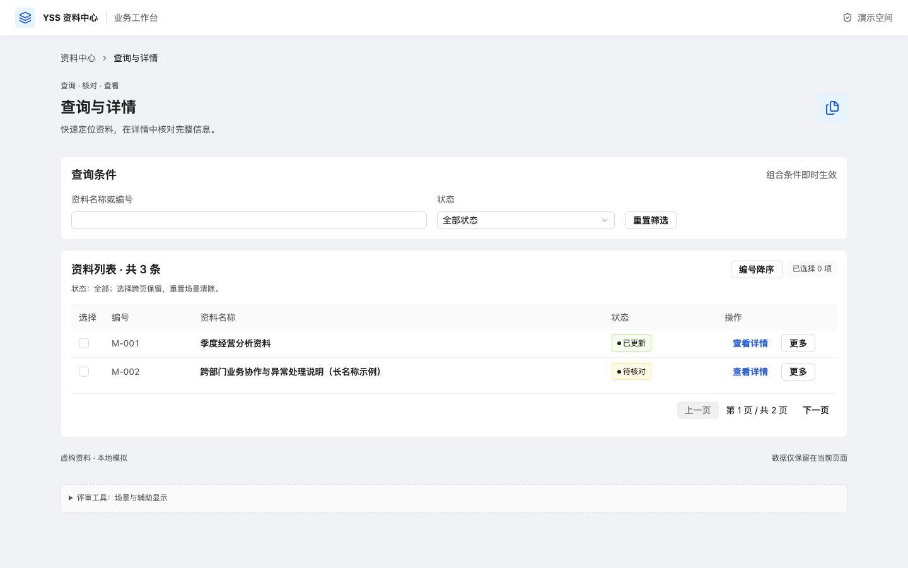

YSS · Vue 3 + shadcn-vue
更清楚的层级，更轻盈的操作
同一套资料、同一段流程，比较标准精修与轻玻璃。保留现有品牌、字号、控件尺寸和圆角。
怎么体验
- 在对照页选择外观和场景；切换外观会恢复该场景初态。
- 查询页试用筛选、跨页选择、更多菜单和详情关闭。
- 表单空填“下一步”查看错误定位；填完后提交一次失败，再重试。
- 轻玻璃只用于控制区域。打开菜单或滚动页面观察层级；页尾评审工具可切换“减少透明效果”。
四份页面都可独立打开，支持桌面及窄屏。Vue 作者路线已加入技能；毛玻璃仍为局部试验材质，未设为正式默认主题。当前作者路线统一 shadcn-vue；React 库和构建入口已移除，历史证据仅只读。